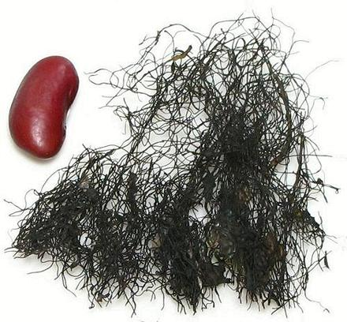

Fat Choy - Black Moss

[Hair Moss, Sea Moss; (Fat Choy = "Hair Vegetable"); Tóc tien
tóc thieng (lit "Angel Hair");
Nostoc flagelliforme]
Not actually a moss, this land dwelling cyanobacteria forms long strands
that look like hair. It is harvested in the Gobi Desert and the Qinghai
Plateau, but harvesting has been restricted due to resulting erosion.
Due to increasing cost, sellers have responded in the time honored
Chinese way - by adulterating the product. Real Fat Choy is has a slight
greenish cast, while the adulterant strands, made from starch, are
usually pure black. Real Fat Choy can stand over 30 minutes of simmering,
but adulterant strands will have disintegrated.
More on Algae and Cyanobacteria.
Fat Choy appears mostly in Buddhist and Cantonese cuisines. Why
Cantonese, which is in the south, while this stuff comes from the north?
Because the Cantonese are reputed to eat anything and everything that
won't kill them, and a fine selection of things that will. Due to an
accidental pronunciation similarity, Fat Choy has become associated
with gaining a fortune and is served during Chinese New Year and
other celebrations.
Fat Choy has only a vague grassy taste of its own, but is supposed to
absorb flavors from the broth it is cooked in, as bean thread noodles do.
I recommend sticking with bean threads and not eating this stuff due to
desertification resulting from its harvest, possible risks to health
(see below) and lack of redeeming culinary value.
Buying & Storing:
I have not found
this product in the large Vietnamese / Chinese markets in the San Gabriel
Valley, but it is available ordered on-line. The photo specimen is from
a package shipped from Hong Kong, purchased for 2019 US $23 for 100 grams
($105 per pound).
Cooking:
Fat Choy is soaked before cooking, and then used
similarly to bean thread noodles. It is reasonably soft with a 20 minute
soak. With 15 minutes of simmering it was soft enough to eat. At 40
minutes it still retained its hair-like texture, but was easy to break
up. I suggest simmering 20 to 30 minutes. It does not expand much with
soaking and cooking.
Health & Nutrition:
A modest amount
of research has been done on this item. In China it is popularly thought
quite nutritious, but laboratory analysis at the Chinese University of
Hong Kong found it to be entirely indigestible and of no nutritional
value. Beyond that, it has been found to contain toxic amino acids that
could negatively impact normal nerve cell function, possibly leading to
degenerative brain diseases and dementia. It is, however, generally used
in very small quantity, so you probably won't get Alzheimers or
Parkinsons from an occasional New Years treat. A study using rats found
no difference between those fed fat choy and the controls.
al_fatchz 100613 - www.clovegarden.com
©Andrew Grygus - agryg@clovegarden.com - Photos
on this page not otherwise credited © cg1
- Linking to and non-commercial use of this page permitted